Overview
In this assignment, we implemented several tasks: rasterizing triangles by checking bounds, supersampling to imporove image quality, transformation matrices to manipulate objects in 2D space, barycentric coordinates, an texture mapping with nearest sampling and bilinear sampling. We implmented multiple approaches for the same target. For example, to reduce aliasing, we implemented supersampling and level sampling, and we compared the tradeoff in terms of memory and speed between the two approaches. We thought this project let us understood the details of how shapes were represented on our screens, and it was fun!
Section I: Rasterization
Part 1: Rasterizing single-color triangles
First of all, we determine the bounds for each triangle. Since we can always draw a rectangle around the triangle,
and have all points inside the triangle be in the rectangle, there's no need for us to iterate through the whole image.
We only need to iterate through every pixel inside the bounding box.
Next, we perform a check for each pixel to see if it's inside the boundary
of the triangle. We did that by looking at if a point was on the "correct" side of an edge of the triangle. If it's on the correct side for all three edges, then the point is in the triangle. A point is considered
to be on the correct side if it's on the same side as the third vertex. In this example here, the green point would be on the correct side,
because it's in the same half plane as the third vertex, C. To determine which half plane the target point is in, we plugged in the coordinates
of the point and the third vertex C into the implicit line equation. If the target point and the third vertex C we used as a check had the same
sign, then the target point was on the correct half plane.
Finally, we fill in the color for the pixel if it's in the triangle.

Here's the result on test4. Note that there were some aliasing effect on the top of the pink triangle.
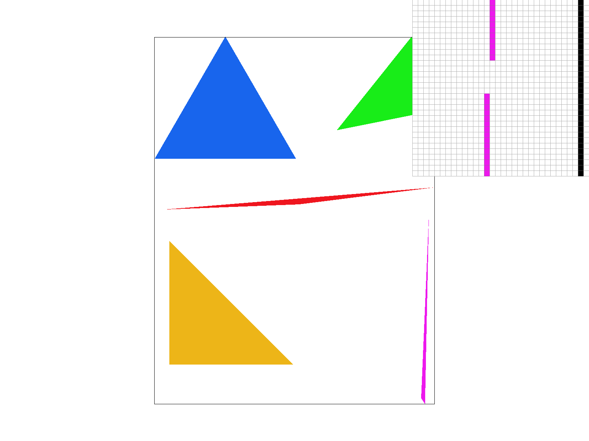
Part 2: Antialiasing triangles
To remove weird edge effects like the one above, we used supersampling. Supersampling can be approximately thought of as
1-pixel box filters. To implement supersampling, for the area of each pixel, we further divide the square into sqrt(sample_rate) * sqrt(sample_rate) of smaller squares (pixels).
For each sub pixel, we perform a check to see if it's inside the triangle. If it is, we store this information of this pixel into our sample_buffer. Therefore, the dimension of our sample buffer is sqrt(sample_rate) * image_width by sqrt(sample_rate) * image_height.
Then, after we filled in all the sub pixel values, we convert our sample_buffer into framebuffer, which was what's actually displayed on the screen. We did this by dividing the sample_buffer into squares of size sqrt(sample_rate) * sqrt(sample_rate), then
took the average of the four pixel colors to obtain the final color for the actual pixel which was displayed.
|
|
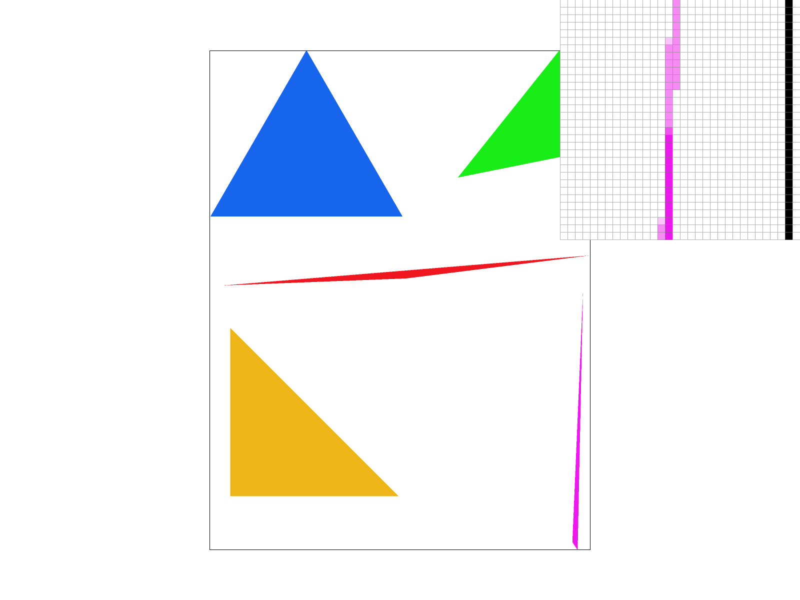 |
|
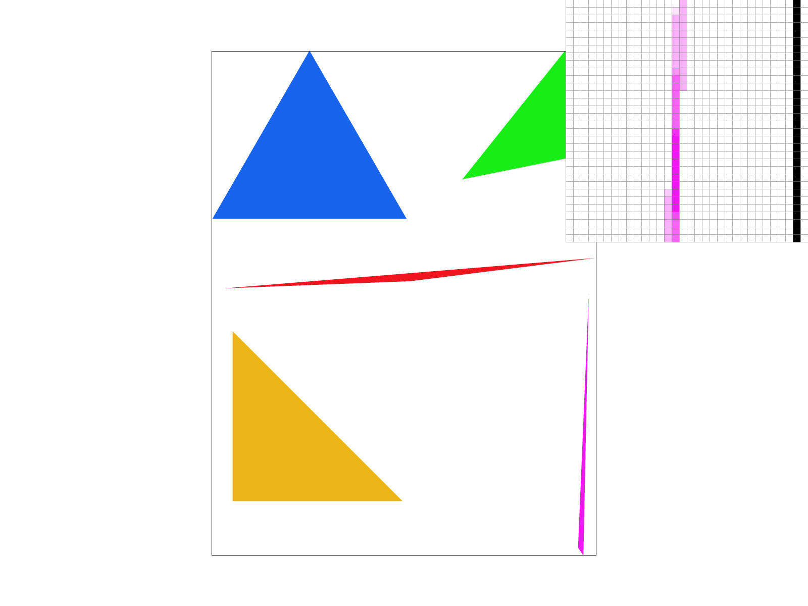 |
|
As you can see, when sampling rate = 1, there were a gap between two area. However, when we increased the sampling rate, the area gained color, although lighter. This was because this area was the skinny area of the triangle, and if we only used one point to determine whether the pixel was in the triangle, we could miss. So instead, we now use 4 point/16 points to determine the color of the pixel.
Part 3: Transforms
In task 3, we implemented translation, scaling, and rotation matrices for homogeneous coordinates for 2D space. Below is a picture of the robot manipulated through these transformations. They are lying on the bed alone enjoying themself, because that's what people should do on Valentine's Day!
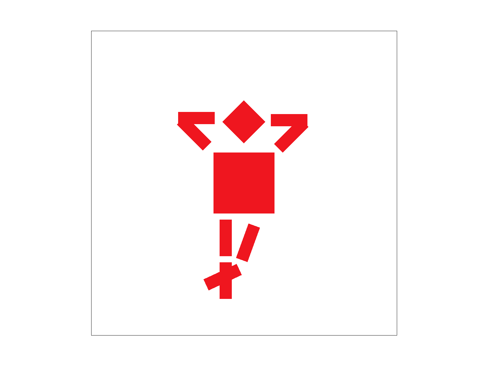
Section II: Sampling
Part 4: Barycentric coordinates
Barycentric coordinates defines the position of a point with respect to three vertices of the triangle. The basis would be the coordinates of the three vertices, and the coefficient in front of the vertices, alpha, beta and gamma, specifies the location of the point. By varying the coefficients, we can obtain all the points inside the triangle. The coordinates of all the points inside the triangle are linear combinations of the coordinates of the three vertices. Here is an example. We defined the colors of the vertices, and found all possible combinations of alpha, beta and gamma, such that $$\alpha + \beta + \gamma = 1$$ which means that the point is in the triangle. Then we use the coefficients to linearly interpolate the color of the vertices to obtain the corresponding color of the point. The result is very smooth.
|
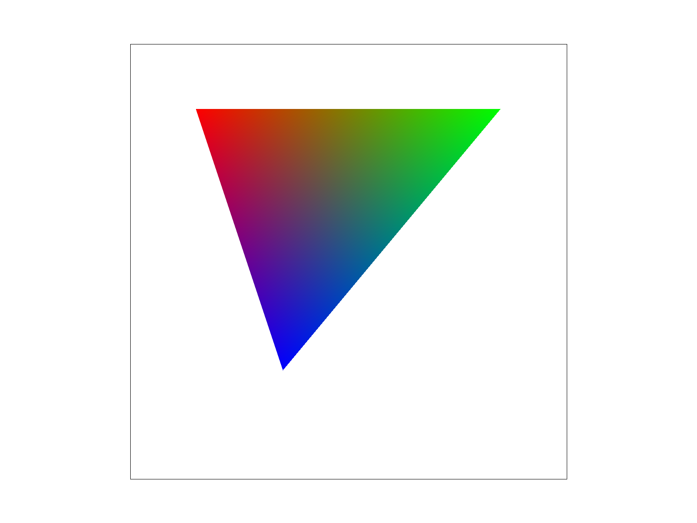 |
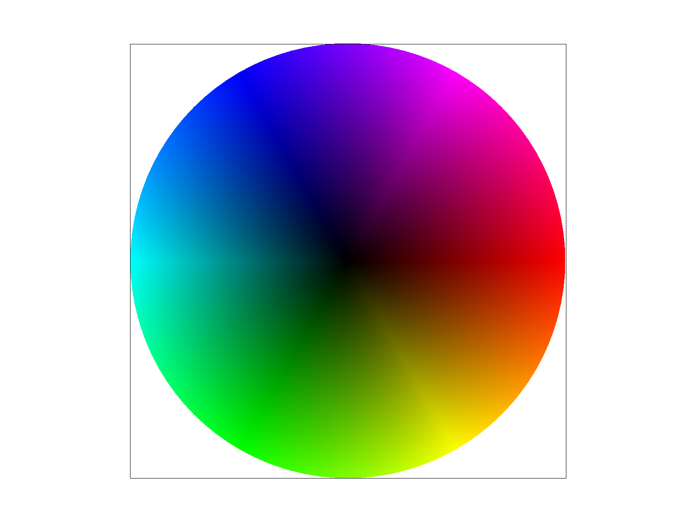 |
Part 5: "Pixel sampling" for texture mapping
Pixel sampling is the process of determining the color of a pixel by sampling the corresponding point on the texture.
Texture sampling is an example of this process. We determine the mapping from (x, y) in screen space to (u,v) in texture space with the help of Barcentric coordinates.
For a point in a triangle, we first calculate the barycentric coodinate of this point:
$$ (\alpha, \beta, \gamma) \text{, where } {(x, y) = \alpha (x_0, y_0) + \beta (x_1, y_1) + \gamma (x_2, y_2)} $$
Then, we use barycentric coordinate to get this point's correspoding point in the texture space:
$$ {(u, v) = \alpha (u_0, v_0)+ \beta (u_1, v_1) + \gamma (u_2, v_2)} $$
In nearest neighbor sampling, the color of the pixel is determined by selecting the color of the texel that is nearest to the pixel.
In other words, we choose the coordinate (u_near, v_near) where u_near is the closer one to u between floor(u) and ceil(u). Similarly, v_near is the closer one to v between floor(v) and ceil(v).
In bilinear interpolation, the color of the pixel is determined by blending the colors of the four nearest texels to the pixel. This is achieved through linear interpolation of two upper points, and then two middle points.
|
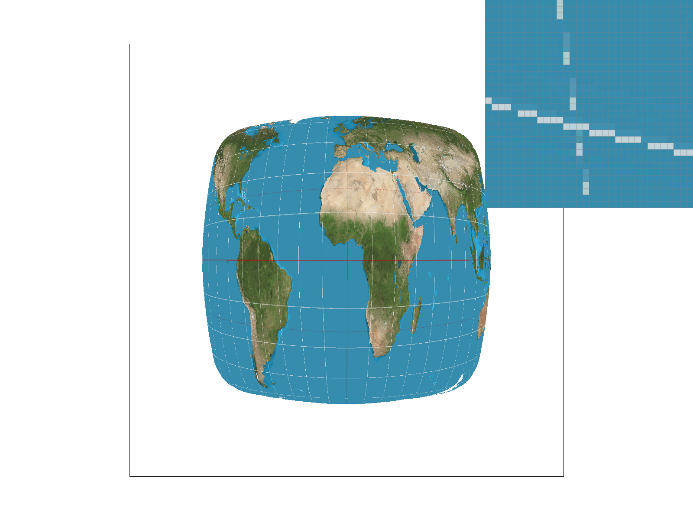 |
|
|
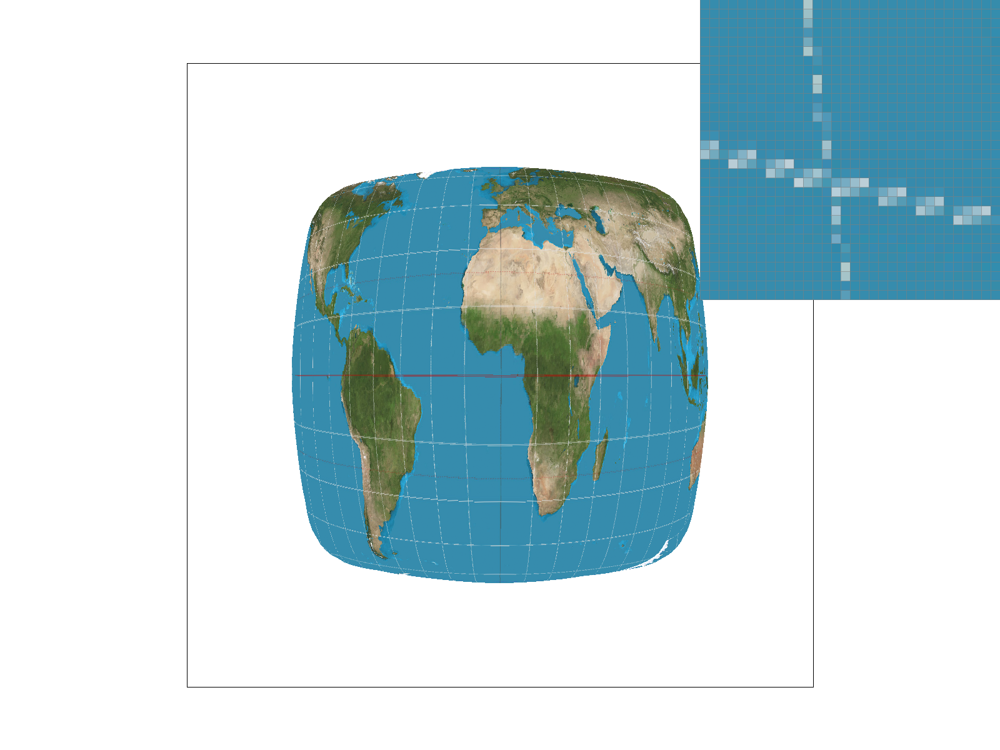 |
|
The main difference between pictures produced by nearest neighbor sampling and bilinear sampling is that nearest neighbor sampling produces a pixelated, sharp image,
while bilinear sampling blurs the image, producing a smoother transition between colors and eliminating jaggies. However, bilinear sampling is also more computation
expensive than nearest sampling, since it requires averaging four point to get color at a pixel.
The difference between the two methods is most pronounced when color inside a texel changes drastically. In this case, four texels near our target point probably produces
four very different colors. Using nearest neighbor sampling in this case would produce a picture where color in nearby pixel also change drastically, while bilinear sampling
helps smoothing out colors.
Part 6: "Level sampling" with mipmaps for texture mapping
Level sampling is a technique to improve the visual quality and performance of texture mapping. This technique is important when we have a large texture to map onto far away or small obejcts. This is because the image's resolution remains constant, and sampling on high-resolution textures inside small areas of image space creates aliasing. Level sampling addresses this issue by creating a series of lower-resolution copies of the original texture, called mipmaps. These mipmaps are generated by reducing the resolution of the original image by a factor of 2 in each dimension, creating a sequence of images with decreasing resolution. When rendering an object, we selects the appropriate mipmap level based on the object's size or distance from the camera. If the object is very small on the screen or very far away, a lower-resolution mipmap is used. If the object is large on the screen or very close, a higher-resolution mipmap is used. We calculate the level using the formula: $$ L = max(\sqrt{(\frac{du}{dx})^2 + (\frac{dv}{dx})^2}, \sqrt{(\frac{du}{dy})^2 + (\frac{dv}{dy})^2}) $$ $$ D = \log_{2}L $$ where D is the level as a float. Then, we choose our desired level: $$ level = \begin{cases} 0&\text{zero level} \\ \text{rounded(D)}&\text{nearest level} \\\text{floor(D) and ceil(D)}&\text{linear level} \end{cases} $$ Note that for linear level sampling, we sample at both level floor(D) and ceil(D), and then we perform linear interpolation using the two colors we got.
|
|
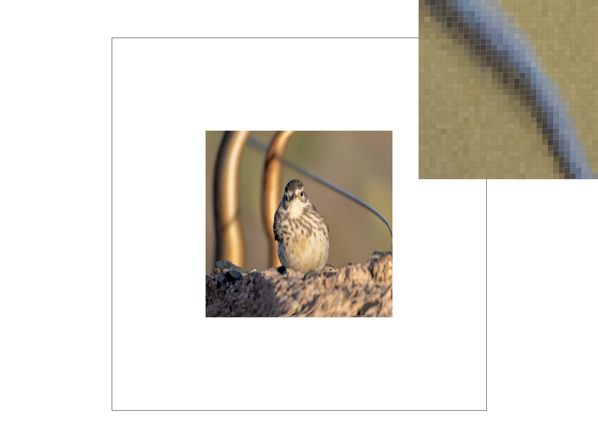 |
|
|
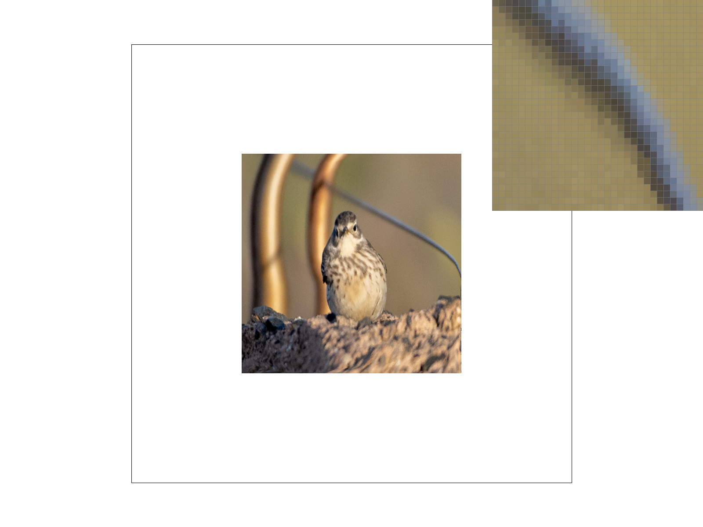 |
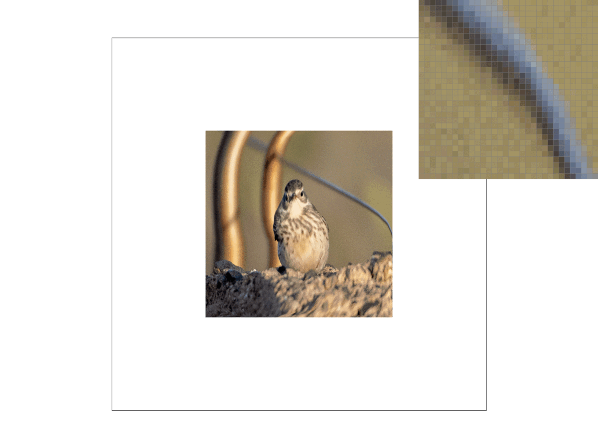
Supersampling has the strongest antialiasing power among the three, but it is also memory expansive and slow, since it requires large sample buffer and large amount of sample points.
Level sampling also has strong antialiasing power. It requires a third more of the original memory size, which is not that much larger.
It is also a bit slower, since we need to calculate the correct level that we need to sample texture from.
Pixel sampling requires only negligible additional memory, and only requires a little more calculation to average the color of the four points. Still, it has greate antialiasing power.
Website Link: https://czh0923.github.io/184-proj-webpage/proj1/index.html